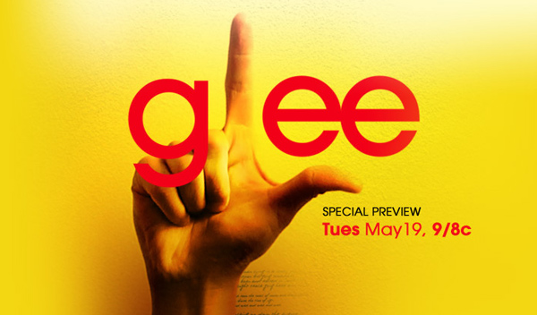

Glee, losers y copyrights
Gracias a Rock Band y a Glee, puedo decir que en términos de gustos musicales, entre mis hijos y yo hay bastante en común, con una gran excepción, nunca tragué a Madonna, pero con respecto a Journey, no hay dos opiniones en mi familia.
Glee es una serie de televisión bastante entretenida y popular entre los jóvenes, donde los héroes son los jóvenes del Glee Club, un grupo de Losers (perdedores), por eso la L en la frente, que tienen el valor de cantar y salir adelante como coro.
En este contexto el show toca temas como el embarazo adolescente, y el abuso del alcohol. Pero hay un tema que Glee elude, el problema del copyright, como lo hace notar Christina Mulligan.
En un episodio de Glee el club se encarga de preparar una copia del video clip Vogue de Madonna(*), el problema que la multa por hacer esto es de 150.000 dolares. Mulligan nos sigue dando antecedentes, en otro episodio un personaje (Sue) publica en internet su propia versión de Physical de Olivia Newton John, si eso sucediera en el mundo real, Sue tendría que pagar 300.000 dolares en daños y perjucios a la industria discográfica norteamericana. Por cada mezcla que los personajes de Glee realizan, deberían pagar 150.000 dolares cada vez.
Pero eso no se muestra en el programa. En Glee se enseña que remezclar o reversionar temas famosos es algo bueno, y legítimo y nadie va a ponerte problemas por eso.
Creeran que exagero, pero en Estados Unidos sí se persigue a los adolescentes cuando hacen lo mismo que sale en Glee, por ejemplo, la American Society of Composers, Authors and Publishers (ASCAP) les pidió a la asociación de campamentos norteamericana, incluyendo a las chicas Girl Scout, ¡que pagaran royalties para poder cantar canciones con copyright en sus campamentos!
Es habitual que los dueños de los derechos de autor retiren videos de youtube que muestran a adolescentes bailando canciones pop.
Hay una tensión, y una contradicción en esta serie, que no tiene que ver con la serie en si misma. El problema es, como dice Doctorow, comentando el artículo de Mulligan,que la industria manda el mensaje contradictorio: “hagan lo que yo digo, no lo que yo hago”. Por un lado los mismos que producen este programa, que promueve el trato justo, la mezcla, acusan a los que copian de ladrones.
Es casi como si nos dijieran: " chicos, vean en televisión lo bonito que es mezclar, reversionar y copiar canciones, porque ustedes no pueden hacerlo, losers!"

(*) el enlace de este video, provisto por Chistina Mulligan no es visible en Chile, debido a protección de derechos de autor.